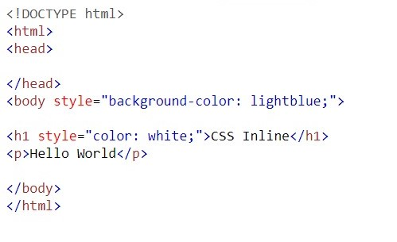
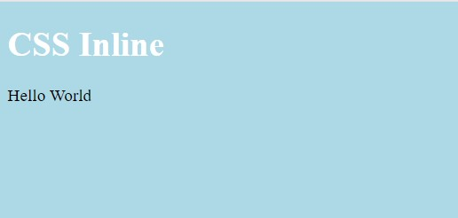
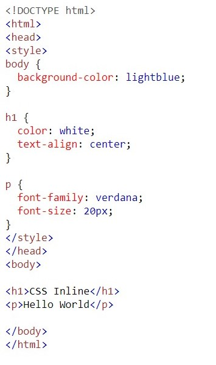
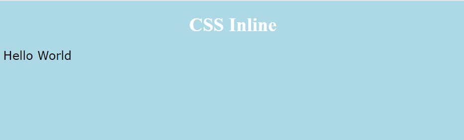
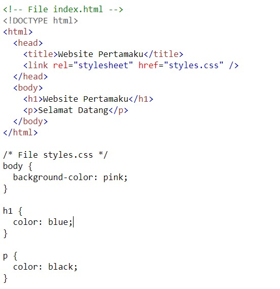
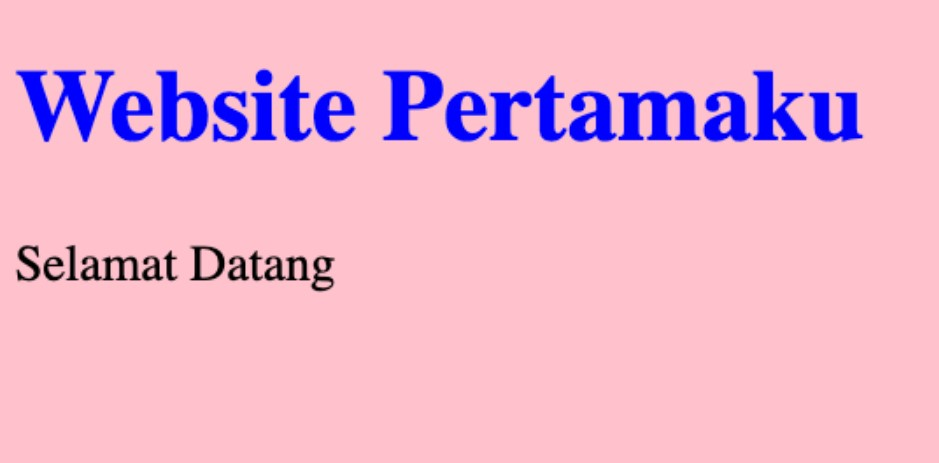

CSS
Apa itu CSS?
CSS adalah singkatan dari Cascading Style Sheets. CSS digunakan untuk menambahkan design ke suatu halaman website di internet. Fungsi CSS adalah sebagai dekorator dari sebuah website.
Bagaimana CSS Bekerja di Web Browser?
Web browser seperti Chrome, Firefox, Edge, Safari, atau Opera akan membaca dokumen HTML. Dokumen HTML
yang berisi tag-tag HTML akan memberitahu browser bagaimana cara menampilkan sebuah konten.
Apabila di dokumen HTML itu terdapat konten CSS maka browser akan memproses CSS tersebut dan
menampilkan design sesuai dengan apa yang telah ditentukan.
Selain HTML dan CSS, ada juga bahasa JavaScript yang akan kita pelajari untuk membuat sebuah tampilan
website yang interaktif. Secara fungsi, ketiga bahasa tersebut bisa dianalogikan seperti ini:

Fungsi HTML adalah sebagai 'kerangka', yang memberi struktur pada website.
Fungsi CSS sebagai 'baju' , yang memberi warna dan layout pada website.
Fungsi JavaScript, sebagai element yang membuat website menjadi interaktif.
Cara Menyisipkan CSS ke Dalam HTML
Ada 3 cara untuk menyisipkan CSS ke dalam HTML, yaitu:
1. Inline, yaitu menggunakan Attribute style pada sebuah tag HTML.
|  |  |
2. Internal, yaitu menggunakan element style.
|  |  |
3. External, yaitu membuat file CSS secara terpisah yang nanti dihubungkan dengan file HTML menggunakan element link.
|  |  |